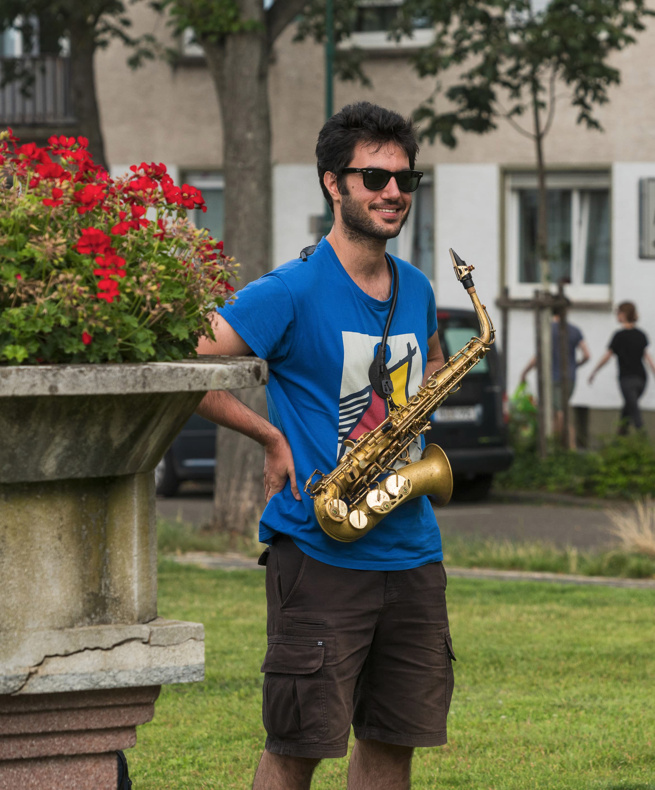

Projects
Pantelis has performed and recorded with many ensembles, including Anemone Saxophone Quartet (the Netherlands, Austria), the European Union Youth Wind Orchestra (Germany, France, Luxembourg), Vienna Saxophone Ensemble (Italy) and the Blue Lake Festival Band (United States), as well as being active in the free improvisation scene (Greece, the Netherlands). A strong advocate of new music, he has premiered numerous works through fruitful collaborations with composers from around the world, including Kostas Zisimopoulos (Greece), Joan Gómez Alemany (Spain), Hans Martin (Canada) and Miles Warrington (South Africa), among others.
View repertoire list